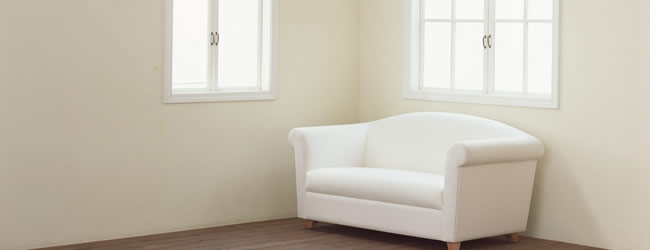

引越前後、入退去時のハウスクリーニング
引越前後のハウスクリーニング （消費税込）
マンションの引越前後のハウスクリーニング 料金表
- ＜間取り例＞
- ＜価格＞
- ワンルーム（20m2以内）
- 35,000 円
- 1DK～1K（30m2以内）
- 45,000 円
- 1LDK～2DK（45m2以内）
- 57,000 円
- 2LDK～3DK（65m2以内）
- 85,000 円
- 3LDK～4DK（80m2以内）
- 100,000 円
- 4LDK～5DK（100m2以内）
- 115,000 円
- 4LDK〜5LDK（115㎡以内）
- 130,000 円
- 5LDK～6DK以上
- 別途お見積もりいたします。
一戸建ての引越前後のハウスクリーニング 料金表
- ＜間取り例＞
- ＜価格＞
- ワンルーム（20m2以内）
- 35,000 円
- 1DK～1K（30m2以内）
- 55,000 円
- 1LDK～2DK（45m2以内）
- 65,000 円
- 2LDK～3DK（65m2以内）
- 95,000 円
- 3LDK～4DK（80m2以内）
- 115,000 円
- 3LDK〜4LDK（100m2以内）
- 135,000 円
- 4LDK〜5LDK（115㎡以内）
- 155,000 円
- 4LDK〜5LDK（135㎡以内）
- 175,000 円
- 5LDK～6DK以上
- 別途お見積もりいたします。
引越前後のハウスクリーニング オプション （消費税込）
- エアコン内部高圧洗浄
- 10,000 円 / 1台
- 浴室エプロンカバー内高圧洗浄
- 4,000 円
- シンク鏡面仕上げ
- 10,000 円
- 防カビコーティング
- 3,000 円
- 多機能換気扇洗浄（浴室）
- 4,000 円
- イオンコーティング
(浴室、洗面、トイレ、シンク)
各 3,000 円- 床剥離洗浄
- 1,000 円 / m2

引越前後のハウスクリーニング クリーニングの内容
キッチンのクリーニング箇所
- レンジフード - 可能な限り分解、付け置き洗浄
- コンロ - 可能な限り分解、付け置き洗浄
- 流し台 - ステンレス保護剤塗布仕上げ
- 収納 - 包丁差し等も取り外し洗浄
- 照明 - 可能なものは取り外し洗浄
- 壁面 - 表面のホコリ除去、部分的にブラシ洗浄
- 床面 - ワックス仕上げ
- シンク、吊り棚、窓ガラス - 洗剤を使用して洗浄
バスルームのクリーニング箇所
- 換気扇、照明 - 可能なものは取り外し洗浄
- 壁面 - ドア、鏡、蛇口、棚等も洗浄
- 床面 - 排水口、カバーも洗浄
- エプロン内部 - カバーを外し、届く範囲でブラシ洗浄
- 浴槽、天井、窓ガラス - 洗剤を使用して洗浄
トイレのクリーニング箇所
- 換気扇 - 可能なものは取り外し洗浄
- 便器 - 除菌消毒効果洗剤で洗浄
- 壁面 - 部分的にブラシ洗浄、表面のホコリ除去
- 照明 - 可能なものは取り外し洗浄
- 床面 - 掃除機がけ、水ぶき、ワックス仕上げ
- 窓ガラス - 洗剤を使用して洗浄
洗面所のクリーニング箇所
- 洗面台、照明 - 可能なものは取り外し洗浄
- 壁面 - 部分的にブラシ洗浄、表面のホコリ除去
- 床面 - 掃除機がけ、水ぶき、ワックス仕上げ
- 窓ガラス - 洗剤を使用して洗浄
玄関のクリーニング箇所
- 壁面 - 部分的にブラシ洗浄、表面のホコリ除去
- 床面 - 掃除機がけ、水ぶき、ワックス仕上げ
- 照明 - 可能なものは取り外し洗浄
- 下駄箱、表札、インターフォン、玄関ドア、窓ガラス - 洗剤を使用して洗浄
ベランダのクリーニング箇所
- 各箇所 - 洗剤を使用して洗浄
- 床面 - 掃除機がけ、水ぶき
- エアコン室外機 - 内部は対象外
- 溝・排水溝 - 可能なものは取り外し洗浄
各部屋のクリーニング箇所
- 壁面 - 表面のホコリ除去、部分的にブラシ洗浄
- 床面 (フローリング、CF) - 掃除機がけ、水ぶき、ワックス仕上げ
- 床面（畳） - 掃除機がけ
- 照明 - 可能なものは取り外し洗浄
- 収納 - 内部拭きあげ洗浄
- エアコン外枠 - エアコン内部は対象外
- 室内ドア、スイッチ、カーテンレール、エアコンフィルター、窓ガラス、サッシ網戸、雨戸 - 洗剤を使用して洗浄
引越し、入退居時ハウスクリーニングについて
- コーキングに付着したカビは完全に除去できない場合があります。
- 不明な点はご相談ください。
- 著しい汚れや匂い等に関しては、追加料金を頂く場合があります。予めご了承ください。
引越前後、入退去時のハウスクリーニング 営業エリア
千葉県
松戸市、市川市、船橋市、鎌ヶ谷市、柏市、浦安市、鎌ヶ谷市、習志野市、流山市、八千代市、白井市、千葉市(中央区、稲毛区、花見川区、美浜区、若葉区)
茨城県
つくば市、守谷市、取手市、利根町
東京都
江戸川区、葛飾区、墨田区、江東区、北区、足立区、板橋区、港区、荒川区、目黒区、中央区、豊島区、文京区、台東区、渋谷区、千代田区
埼玉県
川口市、八潮市、吉川市、三郷市、蕨市、戸田市、和光市、越谷市、草加市
お住まいの地域の引越前後、入退去時のハウスクリーニング、空室清掃、ご相談ください。
千葉県の引越前後、入退去時のハウスクリーニングのご依頼、お問い合わせは
ハウスクリーニング ゴリピカ
TEL 047-770-0901
※営業の電話はお断りさせていただいてます
お電話受付時間 8時～17時
お見積無料
〒271-0075 千葉県松戸市胡録台247-1
ペア・フィールド・ハウス305号室
housecleaning@goripika.com